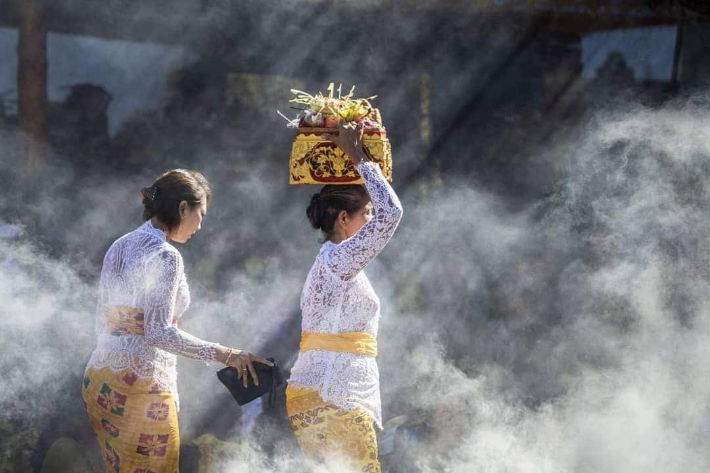

Jantung Kebudayaan Bali
Ubud bukan sekadar destinasi wisata—ini adalah jantung berdetak dari kebudayaan Bali yang masih hidup dan bernapas dalam setiap detail kehidupan sehari-hari. Di sini, budaya bukan museum statis yang hanya diamati dari kejauhan, tetapi realitas yang dijalani, dirayakan, dan diturunkan dari generasi ke generasi dengan penuh dedikasi dan kebanggaan.
Filosofi Tri Hita Karana—keseimbangan harmonis antara hubungan dengan Tuhan (Parhyangan), sesama manusia (Pawongan), dan alam lingkungan (Palemahan)—bukan sekadar konsep filosofis abstrak, tetapi prinsip hidup yang termanifestasi dalam arsitektur rumah, sistem pertanian Subak, upacara keagamaan, hingga interaksi sosial sehari-hari.
Setiap pagi, sebelum matahari terbit sempurna, Anda akan melihat perempuan-perempuan Bali dengan anggun membawa canang sari (sesajen kecil dari daun kelapa berisi bunga, dupa, dan makanan) untuk dipersembahkan di berbagai sudut rumah, toko, bahkan di tengah jalan. Ritual sederhana ini adalah pengingat konstan akan gratitude dan kesadaran spiritual yang mewarnai kehidupan Bali.

Seni sebagai Persembahan, Bukan Pertunjukan
Apa yang membuat budaya Ubud begitu unik adalah bahwa seni di sini tidak diciptakan semata untuk hiburan atau komersial, tetapi sebagai bentuk persembahan spiritual kepada yang Maha Kuasa. Setiap tarian, setiap ukiran, setiap lukisan memiliki makna sakral yang dalam.

Tari Kecak
Tari Barong, misalnya, bukan sekadar pertunjukan dramatik tentang pertempuran kebaikan melawan kejahatan. Ini adalah representasi kosmologis dari dualisme yang harus seimbang dalam alam semesta. Penari tidak sekadar menampilkan gerakan—mereka memasuki trance spiritual yang menghubungkan mereka dengan energi yang mereka representasikan.
Begitu pula dengan seni lukis gaya Ubud yang terkenal—lukisan bukan sekadar dekorasi dinding, tetapi narasi visual tentang mitologi, sejarah, dan filosofi hidup Bali. Setiap detail, setiap warna, setiap komposisi dipilih dengan kesadaran spiritual yang mendalam.